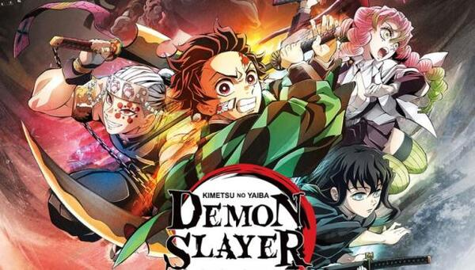
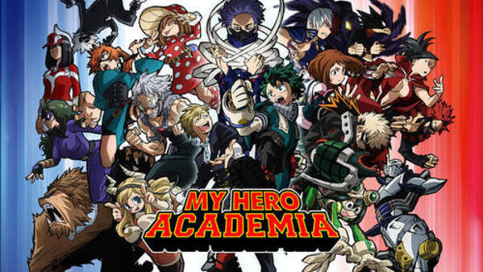

Dragon Ball
Dragon Ball (1986-1989, 153 capítulos): El principio de todo, más de aventuras que de acción, con un Goku más centrado en la leyenda del Rey Mono y la lucha contra maestros de las artes marciales que contra extraterrestres capaces de destruir planetas. Como serie es probalmente la mejor.
Dragon Ball Z (1989-1996, 287* capítulos) / Dragon Ball Z Kai (2009-2015, 159 capítulos): Ya veas la primera versión o el homenaje de aniversario, remasterizado y sin relleno, aquí está el anime de acción por excelencia. Z es épica y llena de batallas legendarias: La primera lucha de Goku contra Vegeta, ese primer Super Saiyan contra Freezer, Gohan contra Célula, la imaginativa saga Buu... Una leyenda.
Dragon Ball Super (2015-2018, 131 capítulos): Discutida y tardía serie reciente del anime que aprovechó siete años huecos de la serie original para crear una nueva ficción. Aunque al principio flojea y la animación ha recortado su calidad, te recompensa con un último arco, un torneo entre universos, que llega a rozar los mejores momentos de la serie.
Super Dragon Ball Heroes (2018-actualidad): No es canónica y roza el fan service, solo para completistas.
Dragon Ball Z (los últimos 4 episodios, 288, 289, 290 y 291): El final más "auténtico" y canónico de las aventuras de Goku para su creador, Akira Toriyama.
Personajes:
Goku: El protagonista principal de la serie, un guerrero Saiyan que se convierte en el héroe de la Tierra.
Vegeta: El príncipe Saiyan y rival de Goku, que se convierte en un aliado y amigo cercano.
Piccolo: Un Namekiano que comienza como el enemigo de Goku, pero eventualmente se convierte en un aliado y amigo.
Bulma: Una genio de la tecnología y amiga cercana de Goku, quien ayuda a la pandilla en sus aventuras.
Krilin: El mejor amigo de Goku y un guerrero humano que lucha junto a él en muchas batallas.
Trunks: El hijo de Vegeta y Bulma, que viaja en el tiempo para ayudar a Goku y sus amigos a luchar contra enemigos poderosos.
Gohan: El hijo de Goku, quien hereda su gran poder y se convierte en un guerrero poderoso.
Androides 17 y 18: Creados por el Dr. Gero, estos androides poderosos son enemigos temibles de Goku y sus amigos.
Freezer: Un tirano alienígena que busca dominar la galaxia y es uno de los enemigos más peligrosos de Goku y sus amigos.
Cell: Una creación bioingeniería de alta tecnología que se convierte en uno de los villanos más poderosos en la serie.
The spectacular spiderman
"The Spectacular Spider-Man" es una serie animada de televisión basada en el personaje de Marvel Comics, Spider-Man. La serie sigue las aventuras del joven Peter Parker mientras lucha contra el crimen y aprende a equilibrar su vida personal y su vida como superhéroe.
La historia comienza con Peter Parker como un estudiante de secundaria que adquiere habilidades sobrehumanas después de ser mordido por una araña radiactiva. Con la ayuda de su tío Ben y su tía May, Peter aprende a usar sus habilidades para combatir el crimen en Nueva York como Spider-Man.
A medida que la serie avanza, Peter lucha contra una variedad de enemigos, incluyendo al Doctor Octopus, el Buitre, el Hombre de Arena y el Duende Verde. También se enfrenta a desafíos personales, como el enamoramiento de Gwen Stacy y la rivalidad con su compañero de clase y competidor, Eddie Brock.
La serie presenta una variedad de personajes secundarios de la serie de cómics de Spider-Man, como Mary Jane Watson, Harry Osborn, J. Jonah Jameson y la detective Jean DeWolff.
En resumen, "The Spectacular Spider-Man" sigue la vida de Peter Parker mientras lucha contra el crimen como Spider-Man, al tiempo que lidia con los desafíos de su vida personal como un adolescente en la ciudad de Nueva York.
Personajes:
Peter Parker/Spider-Man: Es el protagonista de la serie y un estudiante de secundaria que, después de ser mordido por una araña radiactiva, adquiere habilidades sobrehumanas y se convierte en el superhéroe Spider-Man.
Gwen Stacy: Es la interés amoroso de Peter y una estudiante de secundaria. Es inteligente, atlética y tiene una personalidad fuerte y decidida.
Harry Osborn: Es el mejor amigo de Peter y un estudiante de secundaria. Es rico y popular, pero también tiene una personalidad compleja debido a su difícil relación con su padre Norman Osborn.
Norman Osborn: Es el padre de Harry y un empresario multimillonario. También es el villano conocido como el Duende Verde, que usa una armadura y gadgets para luchar contra Spider-Man.
Mary Jane Watson: Es otra interés amoroso de Peter y una estudiante de secundaria. Es una joven alegre, extrovertida y amigable.
J. Jonah Jameson: Es el editor en jefe del periódico Daily Bugle y uno de los mayores críticos de Spider-Man, a quien ve como un criminal peligroso.
Eddie Brock/Venom: Es un fotógrafo rival de Peter en el Daily Bugle y uno de los villanos más peligrosos de la serie. Se une con un simbionte alienígena para convertirse en Venom, un ser con habilidades sobrehumanas y una obsesión con Spider-Man.
Shingeki no Kyojin
"Shingeki no Kyojin", también conocida como "Attack on Titan", es una serie de anime y manga que sigue la lucha de la humanidad contra los titanes, unos monstruos gigantes que devoran a los humanos sin aparente razón.
La historia se desarrolla en un mundo donde la humanidad ha sido reducida a vivir dentro de una ciudad amurallada para protegerse de los titanes, quienes han amenazado su existencia por más de cien años. El protagonista, Eren Yeager, junto a sus amigos Mikasa Ackerman y Armin Arlert, sueña con descubrir el mundo más allá de los muros y destruir a todos los titanes.
Pero su sueño se vuelve realidad de la peor manera posible cuando un titán destruye el muro exterior de la ciudad, permitiendo la entrada de otros titanes más allá de los muros. La ciudad es invadida y muchos de sus habitantes son asesinados. Eren, Mikasa y Armin deciden unirse a las fuerzas militares y luchar contra los titanes para proteger a su pueblo y descubrir la verdad detrás de su existencia.
La trama explora temas como la corrupción política, la crueldad humana y la supervivencia en un mundo peligroso y en constante cambio. A medida que la serie avanza, los personajes enfrentan nuevos desafíos y descubren secretos impactantes sobre la verdadera naturaleza de los titanes y la historia de la humanidad.
Personajes:
Eren Yeager: Es el protagonista de la historia. Es un joven impulsivo y determinado que se une al Cuerpo de Exploración para luchar contra los titanes y descubrir la verdad detrás de su existencia.
Mikasa Ackerman: Es la amiga de infancia de Eren y una hábil guerrera. Es leal y protectora con Eren, y está decidida a protegerlo a cualquier costo.
Armin Arlert: Es otro amigo de la infancia de Eren y un estratega brillante. Aunque no es un guerrero hábil, a menudo es capaz de encontrar soluciones creativas a los problemas que enfrentan.
Levi Ackerman: Es el líder del Escuadrón de Reconocimiento y uno de los mejores guerreros de la humanidad. Es un hombre frío y pragmático, pero tiene un gran respeto por la vida humana y la supervivencia de su pueblo.
Erwin Smith: Es el comandante del Cuerpo de Exploración y un estratega excepcional. Es un líder carismático que está dispuesto a sacrificar todo por el bien de la humanidad.
Historia Reiss: Es una joven que guarda secretos importantes sobre la historia de la humanidad y la verdad detrás de los titanes.
Reiner Braun y Bertolt Hoover: Son dos miembros del Escuadrón de Reconocimiento que ocultan un oscuro secreto sobre su verdadera identidad y sus motivos para luchar contra los titanes.
Kimetsu no Yaiba
"Kimetsu no Yaiba" (también conocida como "Demon Slayer" en inglés) es una serie de manga y anime que sigue la historia de Tanjiro Kamado, un joven que se convierte en cazador de demonios después de que su familia es asesinada y su hermana Nezuko se convierte en un demonio.
La trama se desarrolla en un mundo donde los demonios existen y se alimentan de humanos. Los cazadores de demonios, también conocidos como "espadachines", son aquellos que luchan contra los demonios y protegen a la humanidad. Tanjiro, junto con su hermana Nezuko, se une a los espadachines para vengar la muerte de su familia y encontrar una cura para revertir la transformación de su hermana en un demonio.
Durante su viaje, Tanjiro y Nezuko conocen a otros espadachines que los ayudan en su misión, incluyendo a Zenitsu Agatsuma, un espadachín asustadizo pero habilidoso, e Inosuke Hashibira, un espadachín salvaje y temerario. Juntos, enfrentan peligrosos demonios y descubren más sobre la historia y los secretos detrás de los demonios.
La serie aborda temas como el amor fraternal, la perseverancia, la superación personal y el sacrificio. Además, cuenta con una animación impresionante y escenas de acción emocionantes. "Demon Slayer" se ha convertido en una de las series de anime y manga más populares de los últimos años y ha ganado múltiples premios
Personajes:
Tanjiro Kamado: Es el protagonista de la historia y un cazador de demonios. Después de que su familia es asesinada y su hermana Nezuko se convierte en un demonio, se une a los espadachines para vengarse y encontrar una cura para su hermana.
Nezuko Kamado: Es la hermana menor de Tanjiro y una demonio. A pesar de su condición, ella todavía tiene rasgos humanos y Tanjiro está decidido a encontrar una cura para ella.
Zenitsu Agatsuma: Es un espadachín asustadizo pero habilidoso. A pesar de su miedo, es capaz de luchar contra los demonios cuando es necesario.
Inosuke Hashibira: Es un espadachín salvaje y temerario. Prefiere luchar con sus manos en lugar de usar una espada y tiene una personalidad ruda.
Giyu Tomioka: Es un espadachín frío y distante. Es el primer espadachín que Tanjiro encuentra y lo ayuda a entrenar.
Kyojuro Rengoku: Es un espadachín fuerte y valiente que Tanjiro conoce durante su viaje. Es un hombre apasionado que se preocupa profundamente por la humanidad y la protección de los inocentes.
Muzan Kibutsuji: Es el líder de los demonios y el principal antagonista de la serie. Es astuto, cruel y muy poderoso.

My hero academia
"My Hero Academia" es una serie de manga y anime de aventuras y superhéroes creada por Kohei Horikoshi. La serie se desarrolla en un mundo en el que la mayoría de las personas tienen habilidades sobrenaturales conocidas como "quirks". La trama sigue a un joven llamado Izuku Midoriya, quien nació sin un quirk, pero sueña con convertirse en un héroe.
Después de un encuentro con el héroe número uno, All Might, Midoriya se da cuenta de que su sueño puede convertirse en realidad. All Might le da un poco de su poder, lo que le permite asistir a la prestigiosa Academia U.A. High School, donde los estudiantes aprenden a ser héroes profesionales.
En la escuela, Midoriya se une a una clase de aspirantes a héroes, cada uno con habilidades y personalidades únicas. Junto con sus compañeros, Midoriya aprende a controlar sus habilidades y enfrenta peligrosas amenazas, incluyendo a villanos que buscan destruir la sociedad de héroes.
La serie también explora temas como la amistad, la rivalidad y la lucha por el bien común. A medida que Midoriya y sus amigos enfrentan nuevos desafíos, también descubren la importancia de trabajar juntos y superar sus propias limitaciones para convertirse en héroes verdaderamente poderosos.
En resumen, "My Hero Academia" es una emocionante serie de superhéroes que sigue el viaje de un joven que lucha por alcanzar su sueño de convertirse en un héroe, mientras aprende lecciones importantes sobre la amistad, la valentía y la perseverancia.
Personajes:
Izuku Midoriya: Es el protagonista de la serie y un joven aspirante a héroe que nació sin un quirk. Sin embargo, después de recibir el poder de All Might, se une a la Academia U.A. High School para aprender a controlar sus habilidades y convertirse en un héroe.
All Might: Es el héroe número uno y un símbolo de la paz en el mundo. Es el mentor de Midoriya y le otorga su poder para ayudarlo a convertirse en un héroe.
Katsuki Bakugo: Es el rival de Midoriya y un estudiante de la Academia U.A. High School. Tiene un quirk explosivo que le permite crear y detonar explosiones a voluntad.
Ochaco Uraraka: Es una compañera de clase de Midoriya y Bakugo en la Academia U.A. High School. Tiene un quirk de gravedad que le permite controlar la gravedad de los objetos que toca.
Tenya Iida: Es otro compañero de clase de Midoriya en la Academia U.A. High School. Tiene un quirk de velocidad que le permite moverse rápidamente.
Shoto Todoroki: Es un estudiante de la Academia U.A. High School y uno de los personajes más poderosos de la serie. Tiene un quirk de hielo y un quirk de fuego, que puede usar en combinación para crear ataques devastadores.
Tomura Shigaraki: Es el principal villano de la serie y el líder de la Liga de Villanos. Tiene la habilidad de desintegrar cualquier cosa que toca con sus manos.
